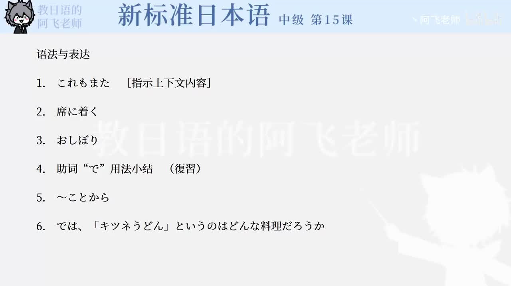

Bilibili P170 · Text
日本レストラン事情：餐饮店、服务与料理名称
从日本餐厅种类说到入座后的免费服务，再解释「親子丼」「他人丼」「キツネうどん」等料理名称的由来。
全篇听力精讲
按 10 个段落轮播。每段包含原文、读音、中文意思、语法重点和结构拆解。
这一课的说明脉络
餐厅种类说明文节点
专门店说明文节点
日本料理说明文节点
入座服务说明文节点
亲子丼说明文节点
他人丼说明文节点
キツネうどん说明文节点
名称由来说明文节点
核心语法速览
〜など列举
举出几个代表例子，暗示还有同类项目。
〜によって依据
表示根据种类、情况不同而变化。
〜である书面判断
说明文、论文、新闻中常见，比「です」更硬。
〜と自然条件
前项一发生，后项自然出现。
〜ながら同时进行
一边做前项，一边做后项。
〜というのは定义说明
引出某个词或概念的解释。
动词た形 + 名词定语修饰
用过去形小句修饰后面的名词。
〜ことから依据理由
表示命名、判断、结论的来源。
逐段精读
语法与表达
核心词汇与搭配
练习与复习
来源说明：视频标题、时长、CID 和首帧来自 Bilibili 公开视频接口；课文内容依据本地新标日中级第15课「日本レストラン事情」整理。